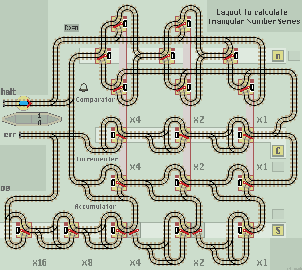

Triangular Number Sequence
The triangular numbers follow the arithmetic sequence 0, 1, 3, 6, 10, 15... where each term increases by the count value 1, 2, 3...etc. The concept dates back to the 5th century BC. Each term is given by the formulae n(n+1)/2. So for example the fourth triangular number is 4(4+1)/2 =10. More information on the Triangular Numbers at Wikipedia. |
|
We need 3 registers:
- An Input register, set to the nth term required. (n)
- A Count register incremented with each cycle. (C)
- A Sum register to hold the accumulating sum. (S)
The operator sets all registers to 0 and the Input register to the nth term required. The train needs to carry out the following steps:
- Compare the Count with n (the nth term requested).
- If the Count is equal to (or greater than) n, then Halt
- we're done, the sum will be showing in the Sum Register ...else... - Increment the Count register (increase by 1).
- Add the Count to the Sum register, producing the next triangular number.
- Loop back to the first step.
Note:
- We cannot simply check if Count and n are equal. Because if n is set below the current Count, the layout will carry on computing until a register overflows. The Count will increment but never equal n to halt the train. Therefore the comparator checks if the Count is equal to or greater than n.
- We need to compare first in case we are asked for the 0th term (or more likely forgot to set register n). This needs to produce a Sum of 0.
- As we only need to continue if the Count is less than n, we can remove one lazy point from the comparator.
The circuit is constructed from three functions. An upper Comparator, a central Count Up (Incrementor) and a lower Adder.
| 
|
| Click layout to pause/run train | Click points to switch 0/1 | Click start circle to reset train/points |
| Lazy points switch between upper 0 or lower 1 branch lines Trains arriving on a branch line switch the point to that line |
|
| Sprung points allow branch line trains to join the main line All main line trains go straight ahead and never 'branch off' |
Operation:
- Clear both Count and Sum registers.
- Set register n to nth term required.
- Start the train running from the station.
- When the train returns to platform 1 and halts, the nth triangular number is shown in the lower Sum register.
- If the train returns and halts at platform 0 then an overflow error of either the Count or Sum registers has occoured.
- To calculate a higher term, just increase n and restart the train. No need to clear registers and start again from the beginning.
To calculate partial triangular numbers, for instance 5+6+7, set n to 7 and C to 4 (one less than the first number).
To calculate higher triangular numbers, registers can be extended to the left indefinitely. A 4 stage n register will allow the 15th triangular number of 120 to be calculated if the Sum register is extended to 7 stages.